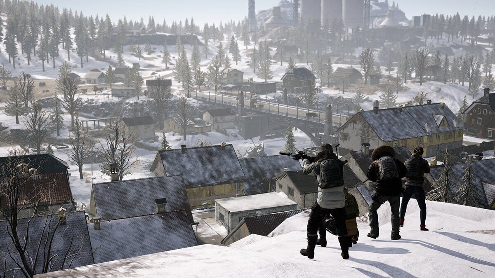
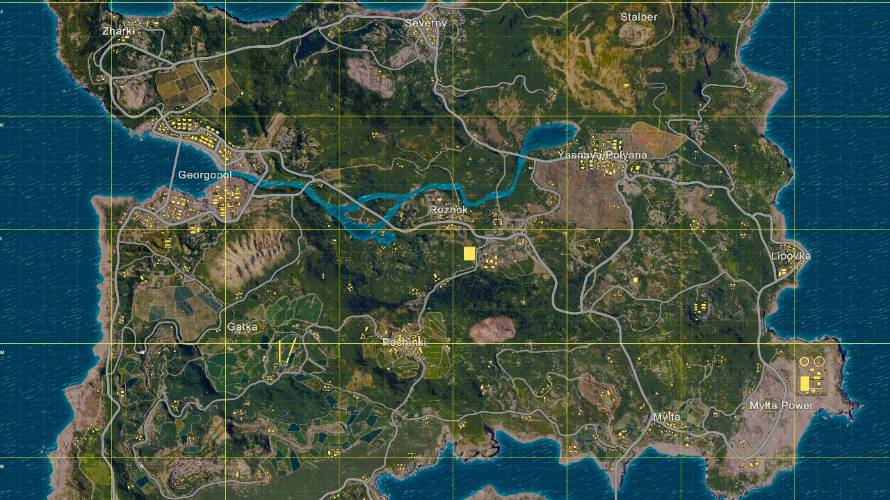
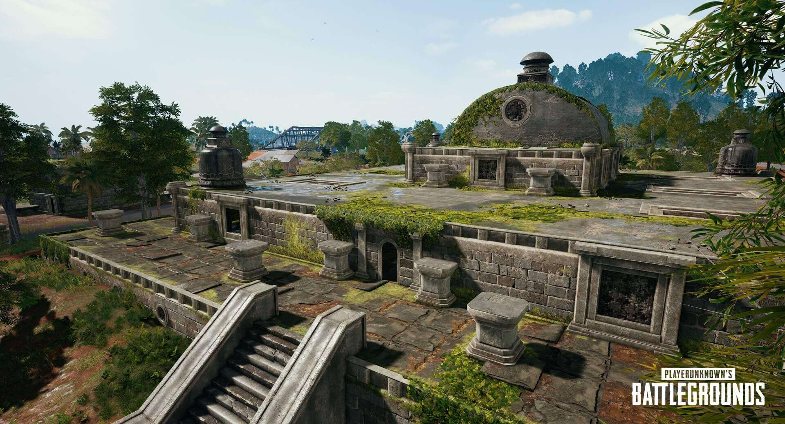
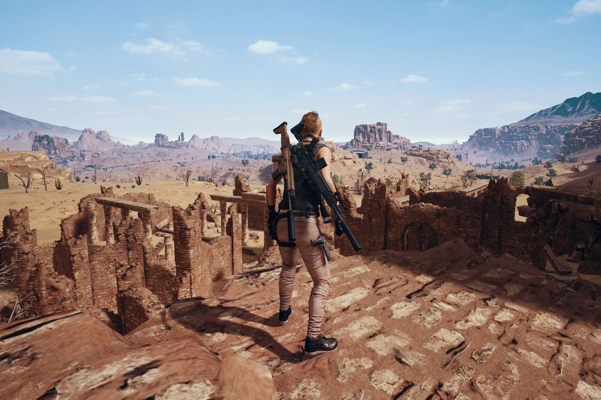

PUBG Maps
PUBG: Guide to the maps

While the full title is PlayerUnknown’s Battlegrounds, most people call it PUBG, because it’s not quite a title that rolls off the tongue. As of writing, it’s an Early Access title on Steam for PC - an unfinished game that you can buy and play before release.
As of now, PUBG is only available via Steam. There’s no word on the possibility of a physical release right now, although it’s possible we’ll see a boxed copy when the game launches. Similarly, when it arrives on Xbox One, it will be digital only, but that’s not ruling out physical copies later down the line. s no word on the possibility of a physical release right now, although it’s possible we’ll see a boxed copy when the game launches. Similarly, when it arrives on Xbox One, it will be digital only, but that’s not ruling out physical copies later down the l
#1: Vikendi

Often reffered to as the snow map, a mix of frozen wastelands and rural areas.
An isolated Northern resort island in the shadow of Mount Kreznic, Vikendi was home to a wide variety of attractions, businesses and villages. Vikendi is enveloped in dense/thick forest and another aspect of the island is its warm Mediterranean coastline and snowy mountains in the central area of the map [3] [4]. Tourists can look to the future from the Cosomodrome, travel back to the past and walk with the giants at the prehistoric Dino Park, visit the aging Castle or even take a tour of the winery.
“The rush of battle is often a potent and lethal addiction, for war is a drug.” ― Chris Hedges
Vikendi is as beautiful as it is dangerous and Survivors treading these bitter cold lands will have to watch their backs even more closely, as the fresh snow is perfect for leaving behind footprints! With snow and the footprints that you leave behind or other players leave behind, the hunter becomes the hunted. The days are long on Vikendi, but it won’t be long before the sun sets and the auroras fill the moonlit skies.
#2: Erengel

Grid style view of erengel.
Erangel’s largest town, but somewhat lacking in modern facilities. The accommodation consists primarily of derelict apartments, for example. There's a good chance of loot here, as well as running into other people looking for it so it's a slightly risky area to hit first. However, there's a high chance of finding a vehicle if you survive so worth considering when you're more experienced.
The school is a central location with a high chance of great gear, which is to say it’s fairly popular. Expect an immediate fight if you drop here at the start of a match - the school in particular is an absolute death trap. The buildings can be slow to loot but there's alway a car in the nearby garage. It's middle map placement also means the safe zone is rarely far away.
#3: Sanhok

The aztec ruins of Sanhok.
>The most recent map added to PUBG (and the third in total) is Sanhok, which changes things up in comparison to the previous two. It's considerably smaller than those, measuring just 4x4km compared to the 8x8km area of both Erangel and Miramar, and a significant part of that is water to make the actual play area even more compact.
That makes a PUBG Sanhok map guide such as this particular handy, as the reduced size and changes to the blue circle settings mean that matches are shorter and you're likely to see a lot more combat. There's a much higher chance that you'll land with other players, especially in the main locations, so if you want to earn that chicken dinner then you need to be ready to fight early on. There are smaller unnamed compounds in Sanhok which are more useful than on other maps, but if you want to make sure you grab some loot then head to one of these locations...
#4: Miranmar

Landscape view of Miranmar.
Miramar offers unique terrain and dense urban areas. With an island to the south east home to a prison and smaller villages, the entire area is cut off from the west and north-east by enormous canyons and mountains, with a looming metal wall to the north keeping outsiders out, and players in. Miramar will create a new Battle Royale experience where the old strategies from Erangel may no longer work and new tactics are required.